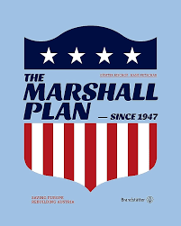
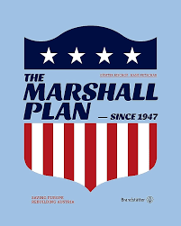

1945
Yalta Conference three of the allied group met to negotiate the post-war status of Europe they were the United States UK and the Soviet Union
1947
Truman Doctrine
President Harry of the united states announced they would provide economic and military aid
1948-1952
Marshall Plan
This officially started the recovery to the western european this was planned by us to prevent the spread of communism


1948-1949
Berlin Airlift
The berlin airlift was the us and its allies bringing food and soplice to west berlin
Because of the soviet union blockade their side
2
1949
NATO Formation
This group was made to protect western side of europe to bring military alliances
2
1949
Chinese Communist Revolution
This revolution lead of Mao Zedong this changed the balance and give tension to asia in the cold war
2
1950-1953
Korean War
This is a perfect example of a proxy war that started by the soviet union and china giving military help to invade South Korea
2
1955
Warsaw Pact Formation
This is a group in response to NATO and was of the eastern bloc countries leaded by the Soviet Union
2
1962
Cuban missile crisis
The cuban crisis is an events that emphasize when the soviet union having plenty of missile bases around cuba that can cause tens millions of deaths through USA this was the closest moment to a nuclear war, the soviet union
 2
2
21989-1991
The Berlin Wall, a symbol of Cold War division, fell on November 9, 1989. The event marked the beginning of the end of the Cold War and set the stage for the reunification of East and West Germany.